A single-storey family house in Simon, St Andrew, being converted into a sleeps-eight villa — four bedrooms (keeping the existing walls) and a vaulted great room that opens to the garden. There is a draughtsman's set to work from. This page and the survey pack linked from it hold everything you need to price the work. You should not have to wait on a reply from us to quote — while we're pricing this we're four hours behind you, so we've tried to answer everything up front.
A quick hello from RobFilmed on the roof of the house at Simon — about 20 seconds. Press play.
Read this pageThe full scope, the measured room sizes and the answers to what builders usually ask. About ten minutes.
Go and see itCall Claudia on 536 1397 and arrange a time with her directly. She holds the keys. You do not need to clear it with us first.
Take what you needDrawings, measured room and window schedules and the full survey photographs are in the survey pack — no request, no waiting.
Send the quoteWhatsApp it, or use the ready-made email template at the foot of this page. By Friday 4 September.
1
Who we are & how this works
We're the Berkeley family. The house sits on our seven-acre family land at Simon and we're refurbishing it so it can be let to visitors. The owner, Rob, is in the United Kingdom while the job is being priced, and works with you by phone and WhatsApp. Once we have a start date he'll be coming back to Grenada for the build — so expect the owner on site, not at the end of a phone. Meanwhile Claudia, a neighbour, holds the keys and is your day-to-day contact — call her direct on 536 1397.
This refurbishment is phase one of a longer plan for the land — there is more work after it, and we would rather find one builder worth coming back to than start again each time. We're looking for one reliable builder to price and carry out the work below. We have a draughtsman's set to work from (the Option D set, downloadable from the survey pack). Building permits and planning approval are our responsibility, not yours. Please read this page, then send us an itemised quote — there's a template at the end. Everything builders have asked us so far is answered in the questions section below, and every drawing and photograph is in the survey pack. Take them; there is nothing to request. If something genuinely isn't covered, WhatsApp us — we'll answer, and then add it to this page so the next builder doesn't have to ask.
2
The work we want done
We're licensing this as a villa (whole-house let), not a guest house — so there's no minimum room-size rule, and we're keeping almost all the existing walls. The ambition goes into opening the house to the garden and cooling it naturally, not into moving walls. Please quote it itemised, and split essential-to-open from later-phase.
The look we're after is plain and hard-wearing — simple hardwood frames and painted panels, no fussy mouldings, brass or stainless ironmongery. Built for salt air and humidity rather than for show.
Layout — keep the walls, sleeps 8
No bedroom reconfiguration. Keep the three existing bedrooms as they are — as a villa there's no minimum size. Refresh only.
Fourth bedroom: convert the living room to a bedroom by fitting a door in the existing opening (it already has a verandah door and two windows). That takes us to sleeps 8.
Bunk room: a built-in bunk (guard rail, ladder, reading light per berth) in the smallest bedroom — a feature, not a squeeze.
Laundry into the bathroom suite: remove the standalone laundry (its wall is the one internal wall that comes out) and roll the laundry into a consolidated bathroom suite, keeping the wet services together on the existing water/waste.
Square off three internal arches: three arched openings inside the house to be squared off to clean rectangular openings (see photos). Keep head heights consistent across them; make good the reveals, lintels and finishes.
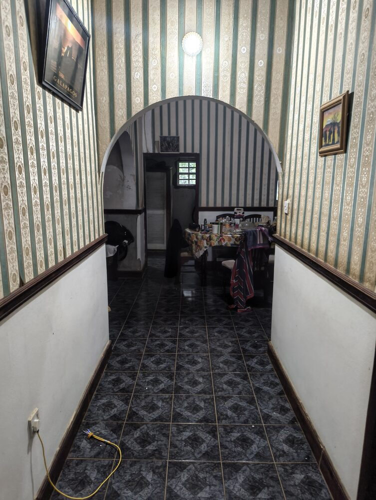
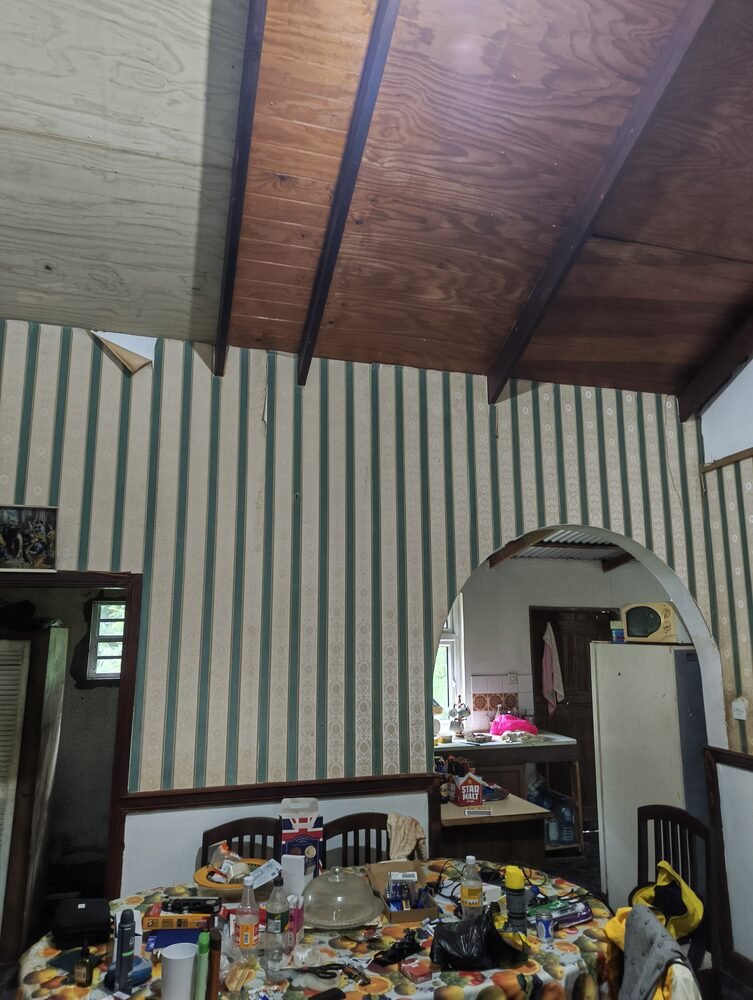
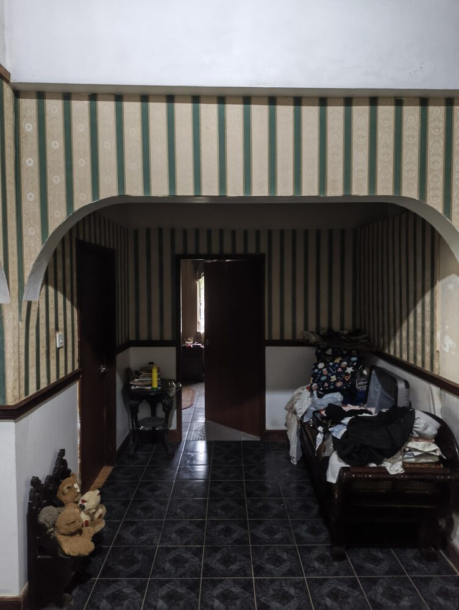
The three internal arches to be squared off (survey, 8 July 2026).
The one structural move — open the great room to the garden
Form an approx. 5 m opening in the rear wall of the vaulted great room (kitchen / dining / living) for impact-rated sliding doors, on a structural beam + posts (engineer to size) for gravity and hurricane uplift. This is the one big structural item — the indoor-outdoor hero.
A deck landing off the opening for now (the full deck comes in a later phase — see below).
Cool without air-conditioning
No AC. Cool by design — ceiling fans throughout and maximum cross-ventilation.
Windows — eleven openings recorded: replace with louvre / awning units for airflow, behind decorative security-mesh grilles — open to breathe, secure at night. Every opening is sized and located in the survey pack; check them on your visit before you order. Quick-release egress to every bedroom (secure from outside, openable from inside without a key — never a fixed bar over a sleeping-room window).
Bahama shutters to the openings — shade, storm protection, and a lock-down skin when the house is empty.
Kitchen roof: a section of opal / heat-control multiwall polycarbonate for daylight without the heat — top-vented.
Skylights — four, one per sleeping room: operable, low-e, impact-rated, with blackout blinds. Allow roughly 600 × 900 mm each and confirm against the Option D drawings.
The enclosed stairwell as a cooling chimney: louvre the kitchen into it and make sure it exhausts at the top; a rope bannister along the wall; replace the door with a lockable security gate (quick-release if it's an escape route). Trace and fix the damp under the stairs — find the source, don't just patch.
Bathrooms — the two we have, working harder
Keep the two existing toilets — no third bathroom. Compartmentalise so at least one WC is its own cubicle (never trapped behind a running shower); twin basins in the shared vanity.
In-room washbasins in the master (and its neighbour if the plumbed corner reaches) — takes the wash traffic out of the bathroom. Tiled splashback, hot and cold, waste to the stack.
Refresh both bathrooms — new fittings, tiling, proper waterproofing, and extraction to control humidity and mould.
Services, safety & the fabric
Full rewire — the old two-meter supply likely has no earth. New consumer unit with RCD and proper earthing (TT arrangement), circuits to every room, the kitchen, the bathroom zones and external lighting. Make it solar-ready: cable routes, board space and earthing sized for a 3.2–4.0 kWp hybrid PV array, a 5 kW inverter and a 5–10 kWh 48V LiFePO₄ battery, plus solar hot water. Grenada Electrical Inspectorate sign-off is required — tell us who holds the licence.
Water: service and assess the cistern and pump; quote more storage if needed.
Damp & cracks: repair the kitchen-wall and bedroom-window cracks and any damp — distinguish structural from cosmetic in the quote.
Floors: assess what's there. Refinished concrete or terrazzo through the house, ceramic tile over proper tanking in the wet rooms. Flag anything that has to come up.
Roof: assess honestly. If it's sound, make good + hurricane tie-downs + solar-ready — standing seam preferred so the PV clamps on without penetrating the sheet. Only quote a full re-roof if it genuinely needs replacing; flag it separately and spec it as 24-gauge standing seam, light grey or white, SRI > 70. Until you've been up there, put it in as a provisional sum rather than a guess.
Septic / soakaway: probe and confirm before we sign; flag any work.
Fire / life-safety: smoke + heat detectors, extinguisher, emergency lighting (our solar covers this), clear escape routes — the tourism / fire inspection will check.
Fine-mesh insect screens to all openings and vents; external / security lighting; a lockable housekeeping store.
The outdoor amenity — phased
For opening: a hot tub on the master-suite deck — supply and site it with its deck, electrics and plumbing. This is the Phase-0 water amenity.
Later, from cashflow (quote separately so we can plan it): the full plunge pool, the full deck, and the outdoor kitchen.
Phase 0 working list — what we deliver ourselves
To keep Phase 0 cost-effective and still to standard, we'll bring a family working party — Rob plus a couple of handy hands — for the finishing work on a scheduled visit. Please exclude the “we deliver” items below from your quote (or price them materials-only / light supervision if you'd rather we buy through you). Everything in the “you quote” list is notifiable, structural or life-safety and stays with your licensed trades.
You quote — licensed trades
We deliver — family working party
Sequence matters: the working party can only finish after your first fix — wall opened, wiring and plumbing roughed in, roof on. So either we come after first fix (we prep → paint → fit-out → FF&E while you second-fix around us), or we come early for the dirty jobs (strip-out, clearance, deck prep, landscaping) alongside you, then return to finish.
What it has to comply with
Grenada Building Code, and hurricane-rated construction for the St Andrew wind zone.
Grenada Electrical Inspectorate — full sign-off on the electrical installation.
Grenada Tourism Authority Accommodation Licence standards — fire, health, sanitation, structural safety. Build it to pass first time; we can't take a guest until it does.
All regulated work carried out or signed off by Grenada-licensed electricians and plumbers.
How to quote it
Itemised — materials and labour separated where you can.
Essential-to-open vs nice-to-have / later phase clearly split. We're opening lean and adding from earnings.
Single-storey concrete-block house, approx. 125 m² footprint (13.25 × 9.50 m)
Rooms now
3 bedrooms, 2 bathrooms, laundry, open-plan kitchen/dining, living room, front verandah
Plot
Part of a seven-acre family property, rural
Position
12.139802°N, −61.618018°W. The house faces east, towards the sea; the great room opens west onto the garden
Working space
Garden plot outside the house footprint is roughly 29.5 × 36 m (~1,062 m²) — plenty of room for laydown and a skip. Warehouse on the south side. A public path runs along the west boundary; please keep it clear
Location & access
Simon, St Andrew — about 15–20 min from Grenville, 45 min from St George's. Concrete road access; parking in the driveway
Water
We have not confirmed this ourselves — mains with cistern storage is the norm here. Check it on your visit and price what you find; we won't have a better answer than your own eyes. Service and assess the cistern and pump, and quote more storage if guest use needs it
Waste water
Septic with soakaway, again unconfirmed by us. Probe it on your visit and confirm it carries four bedrooms sleeping eight; flag any upgrade as a separate line
Power
Grid, 220V / 50Hz. Outages are common — please confirm the meter is active and plan around interruptions
Internet
Flow broadband on site (approx. 111 / 26 Mbps)
Climate & season
Rural, coastal, hurricane zone, high humidity, salt air. Work will likely run through the rainy season (Jun–Nov) — please say how you handle weather delays and protect fresh concrete and open work
Plans & drawings
All of it is in the survey pack, free to download: the Option D draughtsman's set, the floor plan, the measured room and window schedules, and the full survey photographs at full size. Nothing is held back and nothing needs requesting
Measurements are approximate — please verify on site.
Measured room schedule
Taken with a tape on 8 July 2026. Bedrooms, hallway and great room are measured; the bathrooms and laundry are estimated off the sketch and want checking on your visit. Wall thickness 150 mm; ceilings 2.7 m typical, 2.5 m in the wet rooms.
Room
Size
What happens to it
Bedroom A (smallest)
3.30 × 2.60 m · 8.6 m²
Refresh, plus the built-in bunk
Bedroom B
2.40 × 3.80 m · 9.1 m²
Refresh only
Bedroom C (principal)
3.20 × 7.20 m · 23.0 m²
Refresh; in-room washbasin if the plumbing reaches
Bedroom D (ex-living room)
5.70 × 3.75 m · 21.4 m²
Becomes the fourth bedroom — a door in the existing opening
Dining / kitchen — vaulted
open-plan · 30.4 m²
The great room. Rear wall opened; polycarbonate roof section
Hallway
1.50 × 3.75 m · 5.6 m²
Circulation spine — stays
Bathroom 1
3.20 × 2.15 m · ~6.9 m² (est.)
Consolidated bathroom suite — twin basins, WC in its own cubicle
Bathroom 2
2.10 × 1.80 m · ~3.8 m² (est.)
Refresh; possibly a wet room
Laundry
2.10 × 1.80 m · ~3.8 m² (est.)
This wall is the one that comes out — laundry rolls into the bathroom suite
External footprint approx. 125 m² (13.25 × 9.50 m), single-storey concrete block. The stair up to the roof terrace sits outside the footprint on the east side. Four bedrooms when it's done, sleeping eight.
The house as it is now
Real photos from our June survey — the tape measure gives scale.
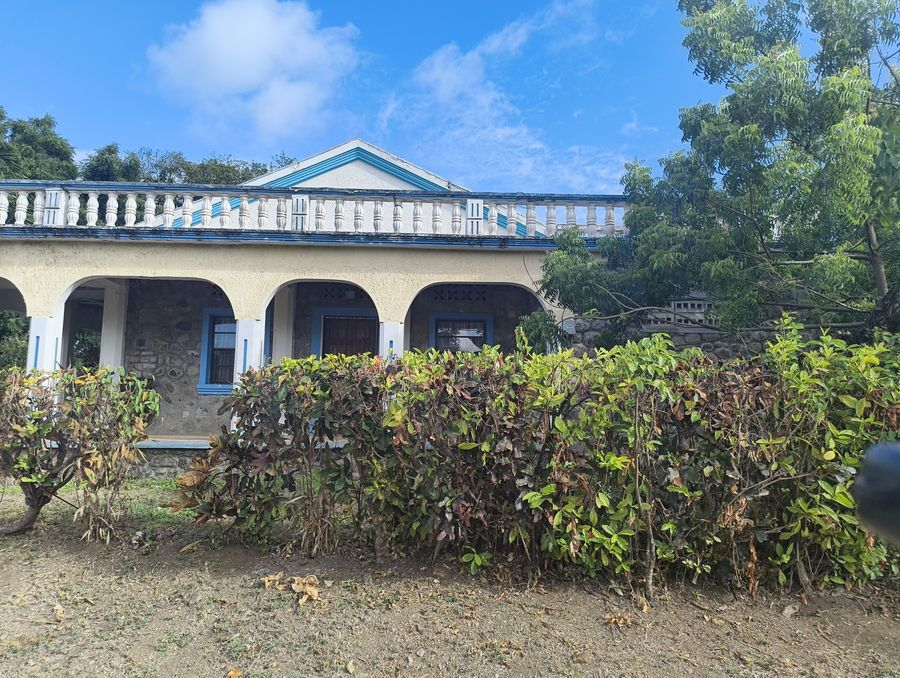
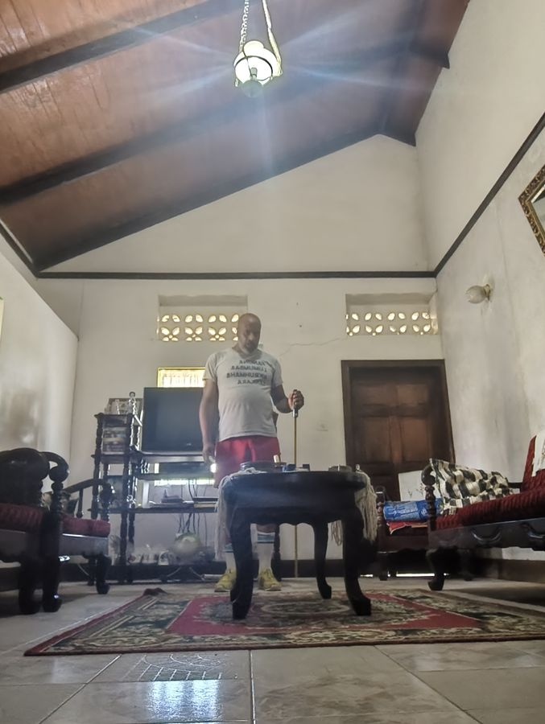
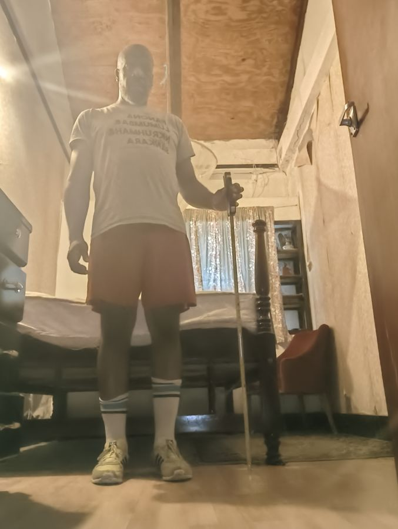
Services & condition — site survey (8 July 2026)
Close-ups of what you'll want to price — electrics, water, plumbing runs and the cracks to make good. Full-size versions of these and the rest of the survey are in the survey pack.
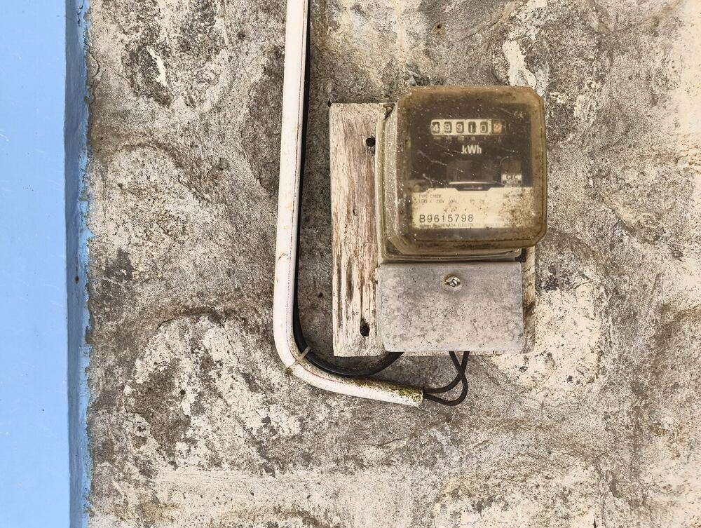
Electricity meter — existing supply
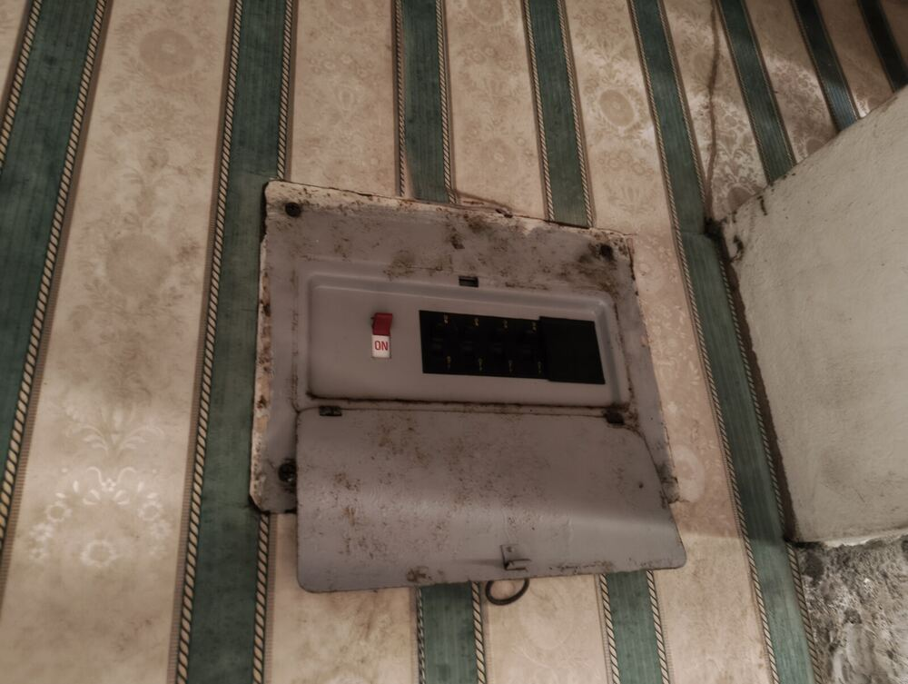
Electrical meter / box
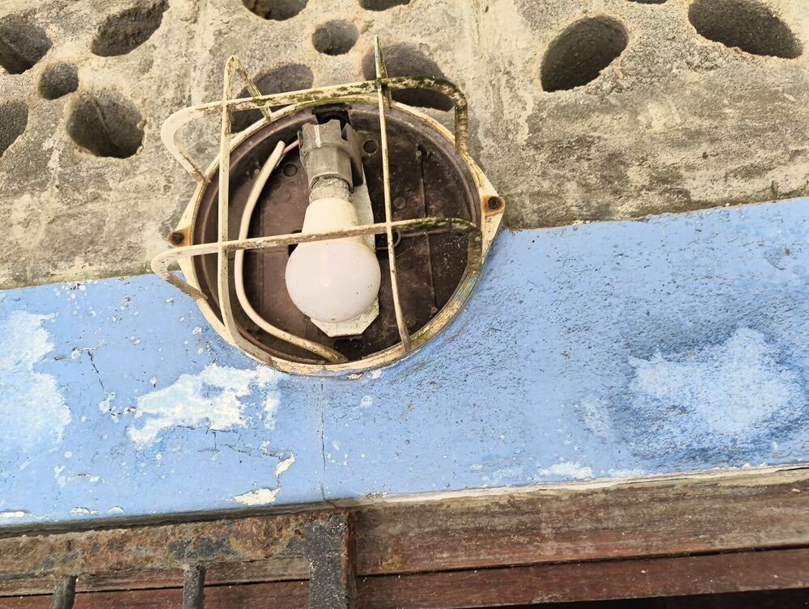
Exterior light fitting — electrics to check
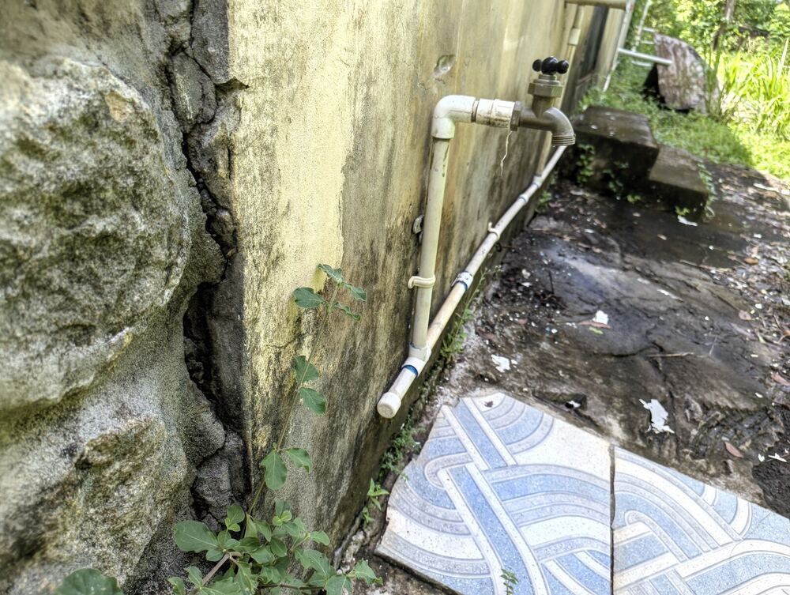
Outdoor tap & supply pipe (note wall crack behind)
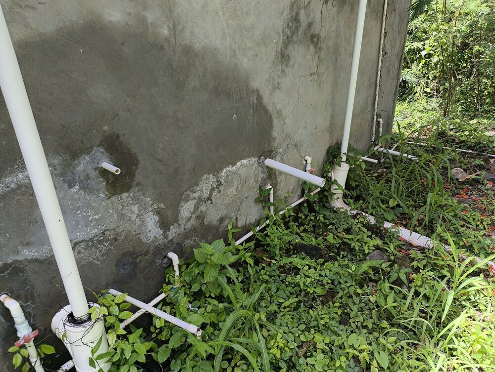
Waste / vent stack at wall base
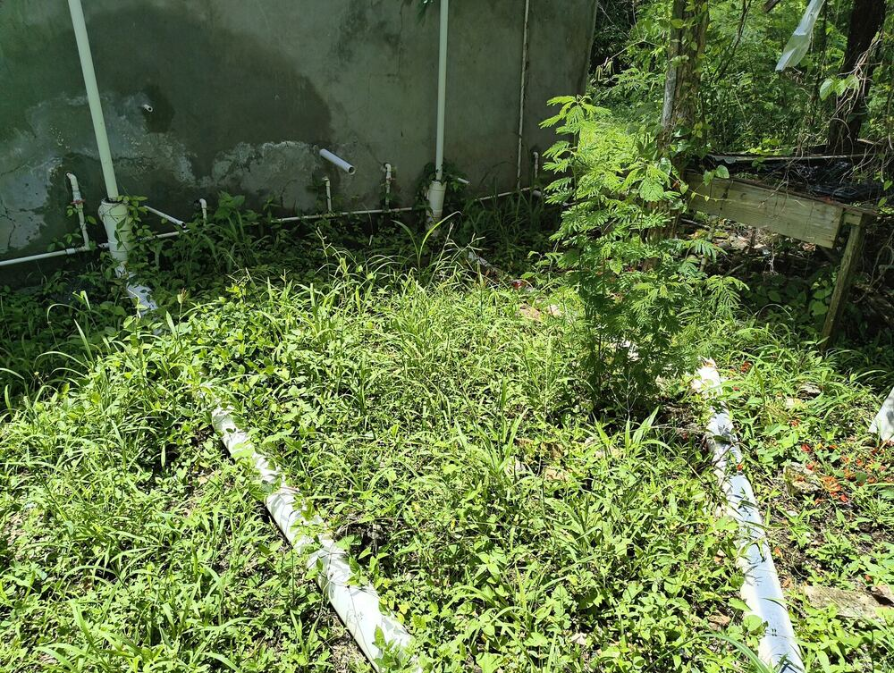
Pipe runs across the plot — water / waste
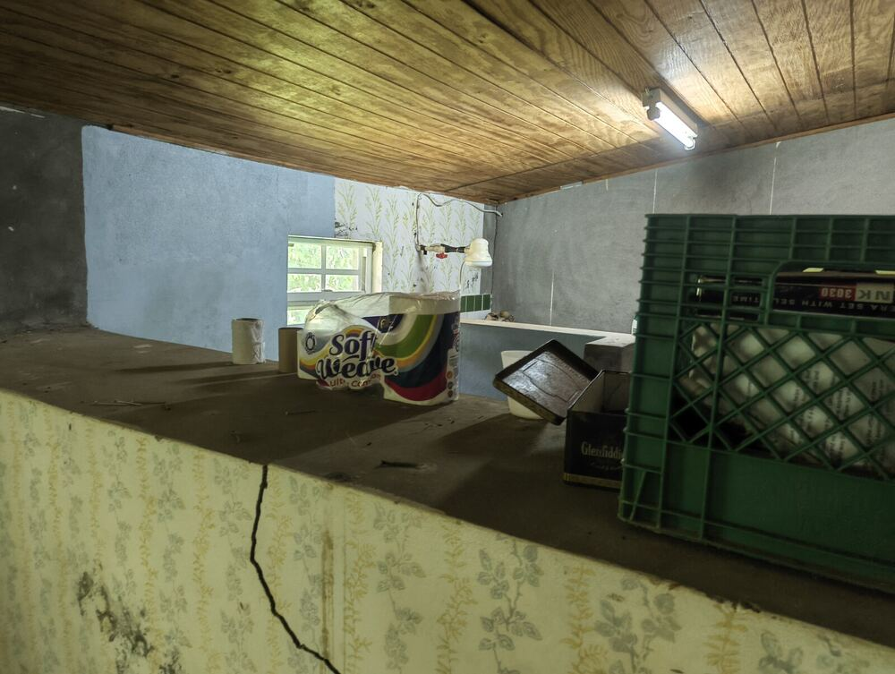
Crack in kitchen wall — to make good
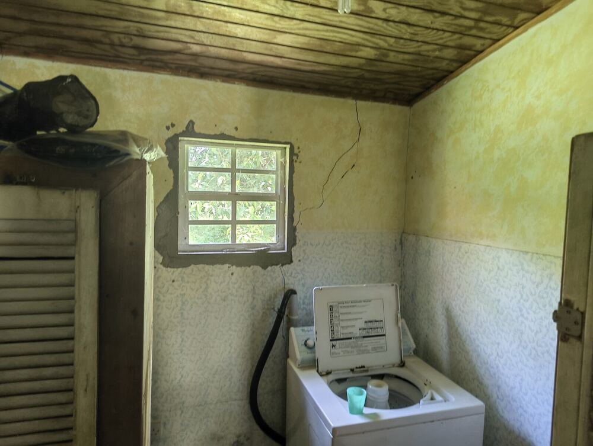
Crack beside bedroom window
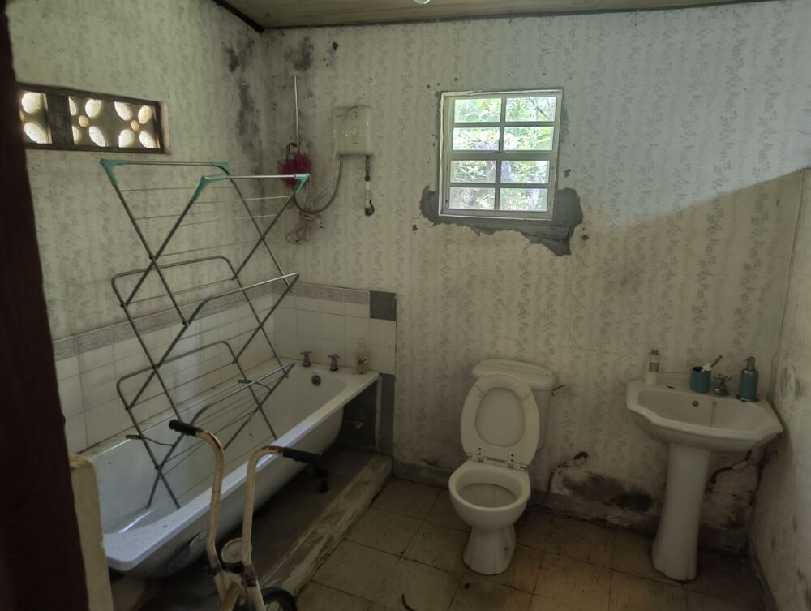
Bathroom — fixtures & condition
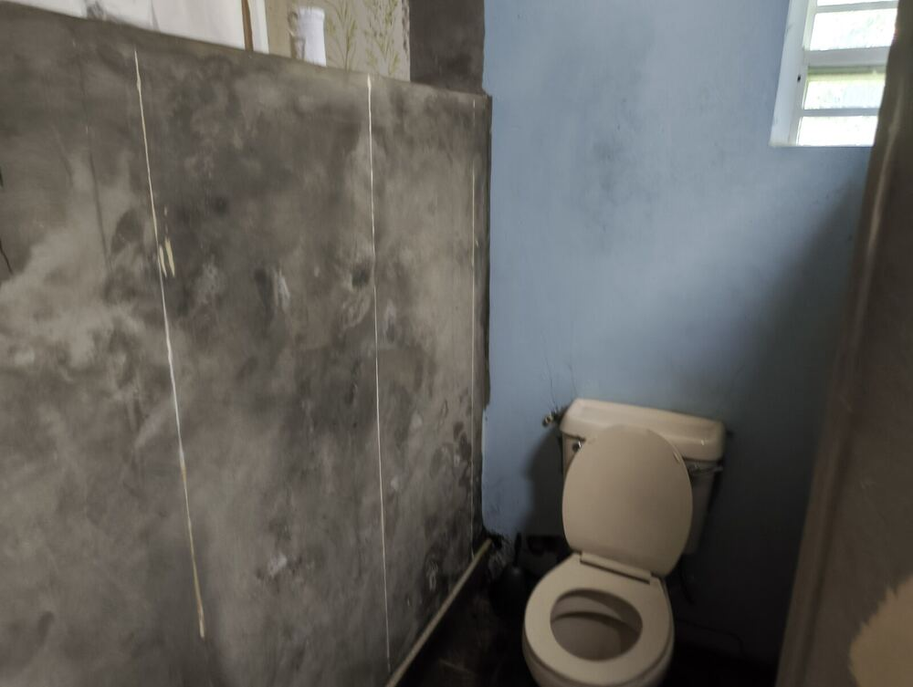
Second bathroom — WC & damp wall
4
Questions you might have
The things builders usually ask us — answered up front.
Who supplies the materials — you or us?
Please quote to supply both materials and labour, shown separately. If there's something you'd rather we bought, just list it as an exclusion in your quote and we'll pick it up — you don't need to check with us first.
Who supplies fixtures, fittings and appliances?
Simple rule: if it's wired in or plumbed in, you supply and fit it — sanitaryware, taps, the extractor, light fittings, ceiling fans, the hot tub. Everything loose is ours — beds, furniture, soft furnishings, flat-pack kitchen units, white goods. The family working party places all of that (see the work split above), so you can leave it out of your price entirely. There is no air-conditioning anywhere in this job — the house is cooled by design.
Is there water and power on site during the work?
Grid power (220V / 50Hz) is at the property, though outages are common — please confirm the meter is active and factor interruptions into your programme. Water is on site; whether it runs off mains, cistern or both is something you'll see faster than we will, so please check it while you're there rather than waiting on us.
Who arranges permits and the tourism licence?
Building permits and planning approval are our responsibility, not yours. The finished house must meet Grenada Tourism Authority standards for an Accommodation Licence (fire, health, sanitation, structural safety) — and that licence is needed before we can take any guests, so please build to pass GTA inspection first time. Materials imported for the project may qualify for GIDC duty exemption — that's our paperwork to sort, not yours. Tell us if any of your work needs a trade licence or inspection you'd normally arrange.
Will the rainy season affect the work?
Likely yes (Jun–Nov). Please tell us how you handle weather delays and protect fresh concrete and open work from the rain.
Where does the rubble and waste go?
Please include removal and disposal in your price, and tell us how you handle it.
Is anyone living in the house while you work?
No — the house will be empty during the works, so you can work freely.
Who's on site day-to-day, and who lets me in?
Claudia, a neighbour — 536 1397 — holds the keys and is your local point of contact. Call her directly to arrange a look round; you don't need to go through us to book it. The owner is in the UK until the build starts and is reachable on WhatsApp, but nothing about seeing the house has to wait on him.
Will the owner actually be around during the build?
Yes. Rob is in the UK now, while the job is priced — WhatsApp for quick things, and we make decisions fast, so you won't be left waiting. But once there's a start date he's coming back to Grenada for the build itself. You'd be working with the owner on site, able to settle things face to face as they come up, rather than waiting on photographs and a time difference.
What currency should I quote in?
Quote in EC$ (XCD). GBP or US$ are also fine — just tell us which you've used.
How do you want to pay?
We prefer a staged schedule tied to milestones. We understand you may need a deposit to buy materials — if so, show us the supplier quotes or receipts and we'll cover materials directly or agree a fair deposit. We just don't pay large sums with nothing to show.
When could you start, and how long would it take?
Tell us your earliest realistic start date and how long the work would take. We know good builders are in high demand right now, so honesty helps us plan.
What's the programme you're working to?
Quotes close Friday 4 September 2026. We compare and take up references through September and aim to award by the end of the month. We'd like to be on site before December, once the hurricane season has passed — but the start date is flexible for the right team, so tell us what works for you rather than ruling yourself out. Rob will be back in Grenada for the build.
What if my question isn't answered on this page?
WhatsApp +44 7764 935770. Until the build starts we're in the UK, so allow for the four-hour difference, but you'll have an answer within a day. We'll also add it to this page — most questions we get are ones the next builder would have asked too, and we would rather answer them once, in public, than hold anybody up.
What if something's wrong after you finish?
Tell us your guarantee — how long it runs, and how you handle putting snags right.
5
How to send us your quote
Please send an itemised quote that covers:
A price for each part of the work — grouped as on this page, with the optional outdoor additions kept separate.
Labour and materials shown separately where you can.
What's included and what's excluded.
Your proposed payment schedule.
Your earliest start date and how long the work will take.
Provisional sums for anything you can't price until you've surveyed it — the roof, the extent of the damp, septic capacity. A named provisional sum is far more use to us than a padded fixed price.
Preliminaries and site overheads, and any subcontractor costs (electrical, plumbing, glazing) as their own lines.
How long the quote is valid for, and any assumptions you've made.
The email button opens a ready-made template you can fill in.
6
About your firm
We want a builder we can trust from a distance, so please tell us a little about you. This matters as much to us as the price.
How long you've been building, and your business name and registration (BIR) number.
Similar jobs you've done — renovations, and especially any villa, guesthouse or holiday-let work.
Your experience with concrete-block construction in coastal / high-humidity conditions.
Two or three references we can call — a name, what you did for them, and a phone number. Recent, completed jobs are best.
A few photographs of finished work.
Your team — which trades are in-house and what you subcontract. Electrical and plumbing work must be done or signed off by Grenada-licensed tradespeople; please confirm who holds the licences.
Whether you own or rent the scaffolding, concrete mixer and compaction equipment this job needs.
Whether you carry liability insurance.
Any experience working with owners who live abroad — useful for the pricing stage, though Rob will be on the island for the build.